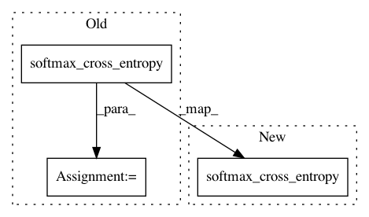

ce0662b713c72a9cf8ee16b0ebbef067eaff3d3b,cloud_tpu/models/inception/inception_v3.py,,inception_model_fn,#Any#Any#Any#Any#,398
Before Change
one_hot_labels = tf.one_hot(labels, FLAGS.num_classes, dtype=tf.int32)
if "AuxLogits" in end_points:
aux_loss = tf.losses.softmax_cross_entropy(
onehot_labels=one_hot_labels,
logits=end_points["AuxLogits"],
weights=0.4,
label_smoothing=0.1,
scope="aux_loss")
prediction_loss = tf.losses.softmax_cross_entropy(
onehot_labels=one_hot_labels,
logits=logits,
After Change
one_hot_labels = tf.one_hot(labels, FLAGS.num_classes, dtype=tf.int32)
if "AuxLogits" in end_points:
tf.losses.softmax_cross_entropy(
onehot_labels=one_hot_labels,
logits=end_points["AuxLogits"],
weights=0.4,
label_smoothing=0.1,
scope="aux_loss")
tf.losses.softmax_cross_entropy(
onehot_labels=one_hot_labels,
logits=logits,
In pattern: SUPERPATTERN
Frequency: 3
Non-data size: 3
Instances
Project Name: tensorflow/tpu
Commit Name: ce0662b713c72a9cf8ee16b0ebbef067eaff3d3b
Time: 2018-01-31
Author: frankchn@google.com
File Name: cloud_tpu/models/inception/inception_v3.py
Class Name:
Method Name: inception_model_fn
Project Name: NVIDIA/OpenSeq2Seq
Commit Name: 8460dd1a57bb7c0390eaeac5ee0dd65ccab85594
Time: 2018-09-24
Author: huyenchip@alumni.stanford.edu
File Name: open_seq2seq/losses/cross_entropy_loss.py
Class Name: CrossEntropyLoss
Method Name: _compute_loss
Project Name: tensorflow/tpu
Commit Name: ce0662b713c72a9cf8ee16b0ebbef067eaff3d3b
Time: 2018-01-31
Author: frankchn@google.com
File Name: cloud_tpu/models/inception/inception_v2.py
Class Name:
Method Name: inception_model_fn